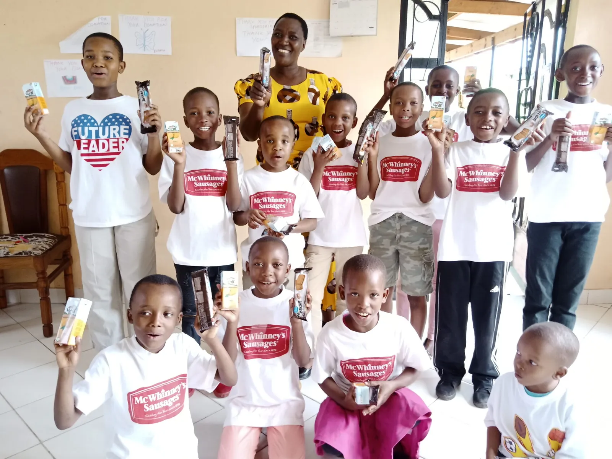

Educación y protección infantil
Programas educativos que aseguran el acceso, la permanencia y la calidad de la educación para niños y niñas.
Más información sobre Educación y protección infantilOrganización sin ánimo de lucro · Arusha, Tanzania
Trabajamos con niños, jóvenes y comunidades locales en Arusha apoyando el acceso a educación, salud y oportunidades reales.

Tres líneas de trabajo que se complementan para transformar vidas y comunidades.
Programas educativos que aseguran el acceso, la permanencia y la calidad de la educación para niños y niñas.
Más información sobre Educación y protección infantilAtención sanitaria y programas de bienestar para niños, familias y comunidades de Arusha.
Más información sobre Salud y bienestarFormación profesional, empleo joven y emprendimiento para construir autonomía real.
Más información sobre Juventud y formaciónMomentos reales que muestran el impacto de vuestro apoyo.
Gracias al programa de becas, Amina ha retomado sus estudios y sueña con ser profesora.
Leer historia →El equipo local completó una nueva ronda de controles de salud para los niños del programa.
Leer historia →Dos alumnos de formación profesional abren un taller de costura en el centro de Arusha.
Leer historia →La confianza de familias, voluntarios y colaboradores es nuestra mejor carta de presentación.
«Fortune Kids devolvió la ilusión de mi hija por ir al colegio. Hoy no falta ni un día.»
«Como voluntaria he visto cómo cada euro se traduce en algo tangible: libros, comidas, sonrisas.»
«El programa de formación me dio las herramientas para montar mi taller. Ahora empleo a dos personas más.»
Hay muchas formas de apoyar nuestro trabajo. Desde donaciones hasta voluntariado, cada aportación marca la diferencia.